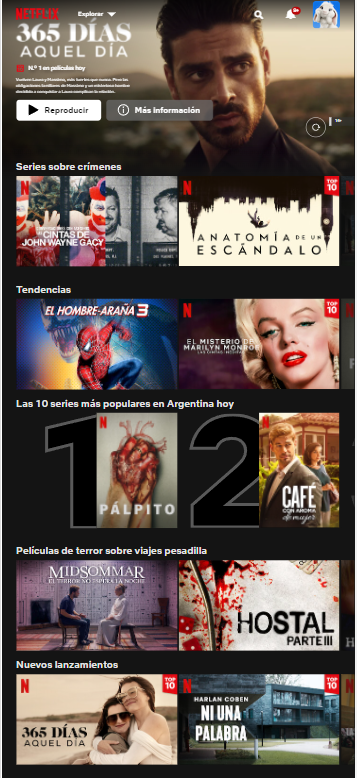
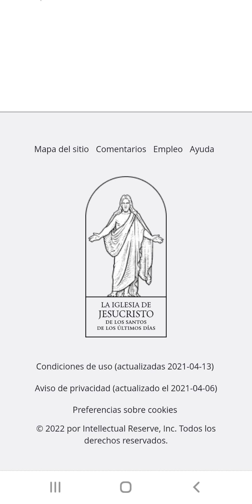

PARC: Proximity
Netflix
We can see an example of proximity with the title of the section and the elements of the section. The margin between one section and another helps the user to understand the page and navigate easily.
Visual Hierarchy
Mercado Libre
This page through the colors, font size and layout of the elements is an example of Visual Hierarchy. In this case, the contrast of the background colors with the letter allows to capture the user's attention and especially the size of the text.
White Space and Clean Design
LDS
This page contains white space that help the page to be more organized, more pleasant for the user when browsing the web and to distinguish and separate the different elements of the page while creating a harmonious design.